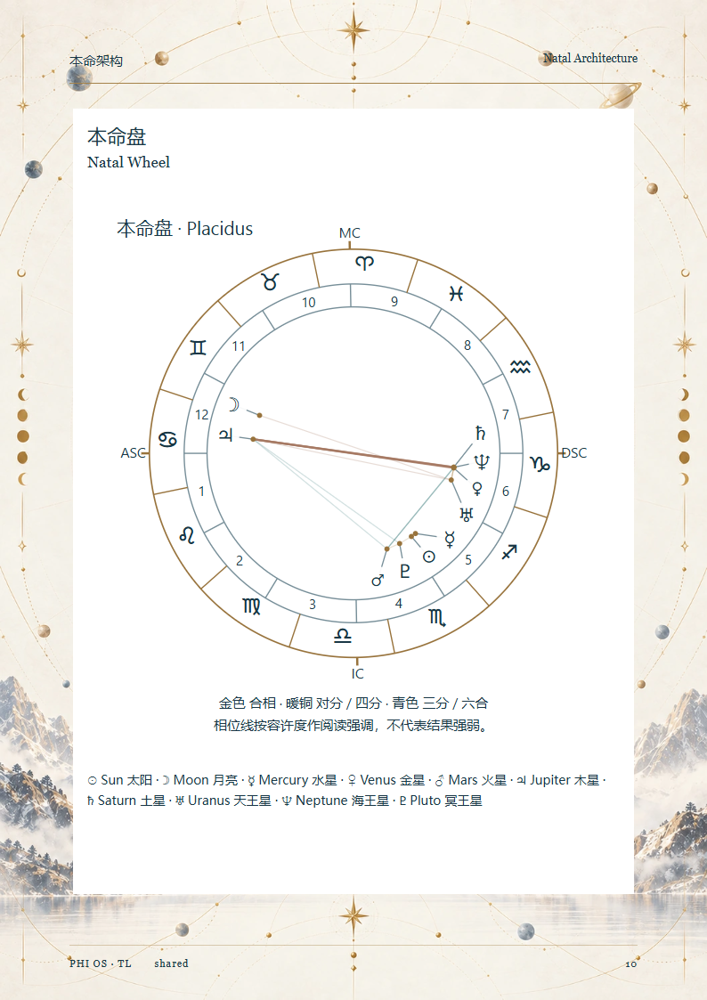
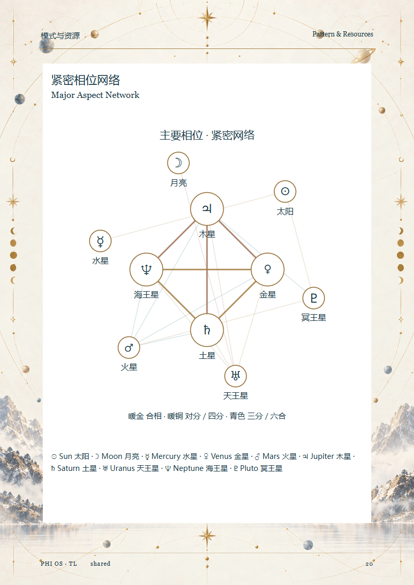
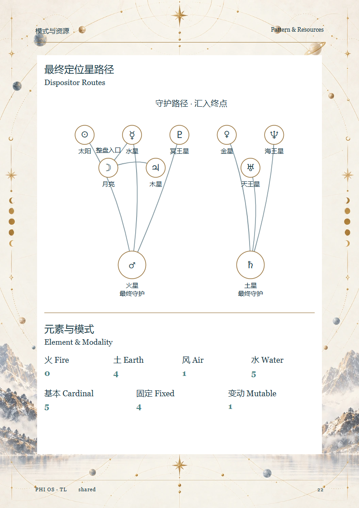
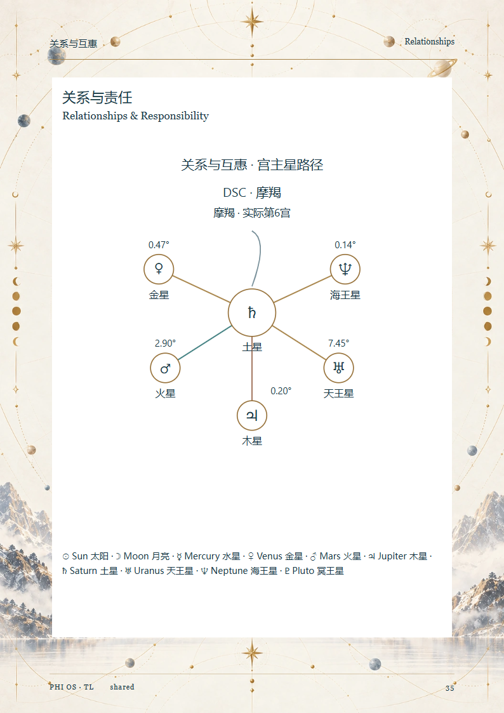
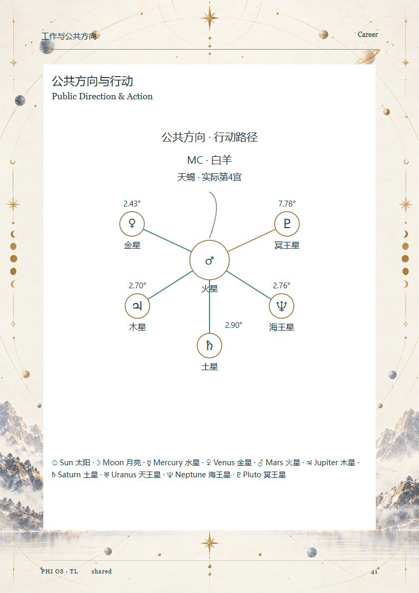
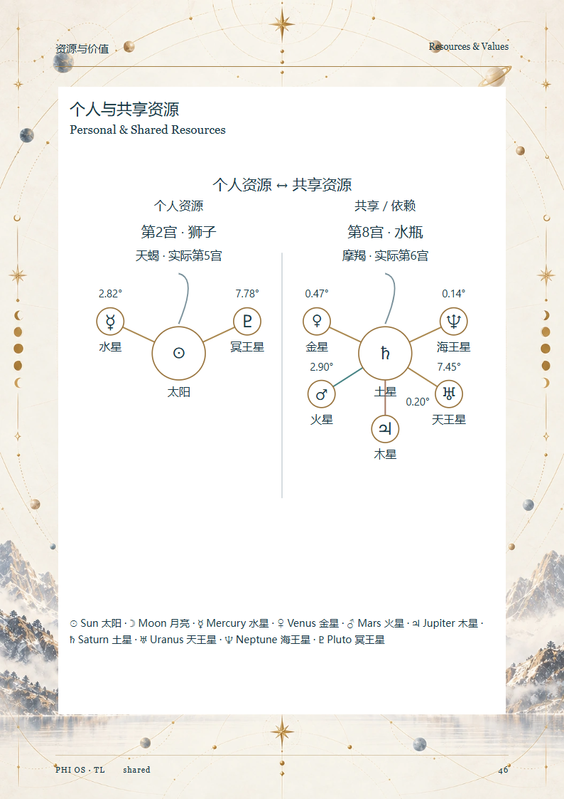
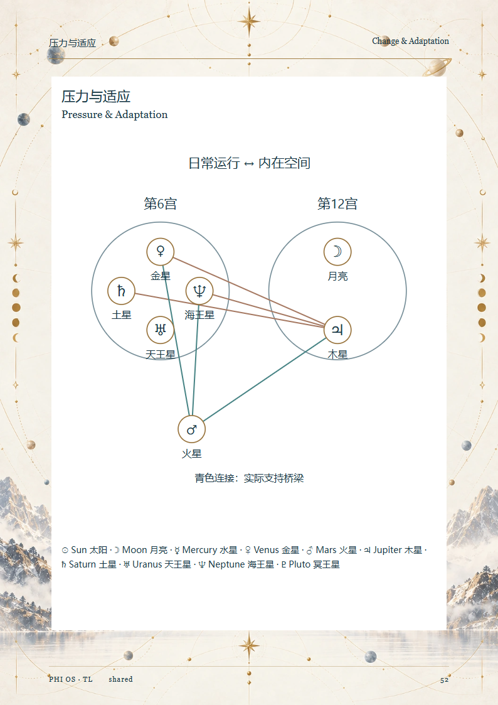
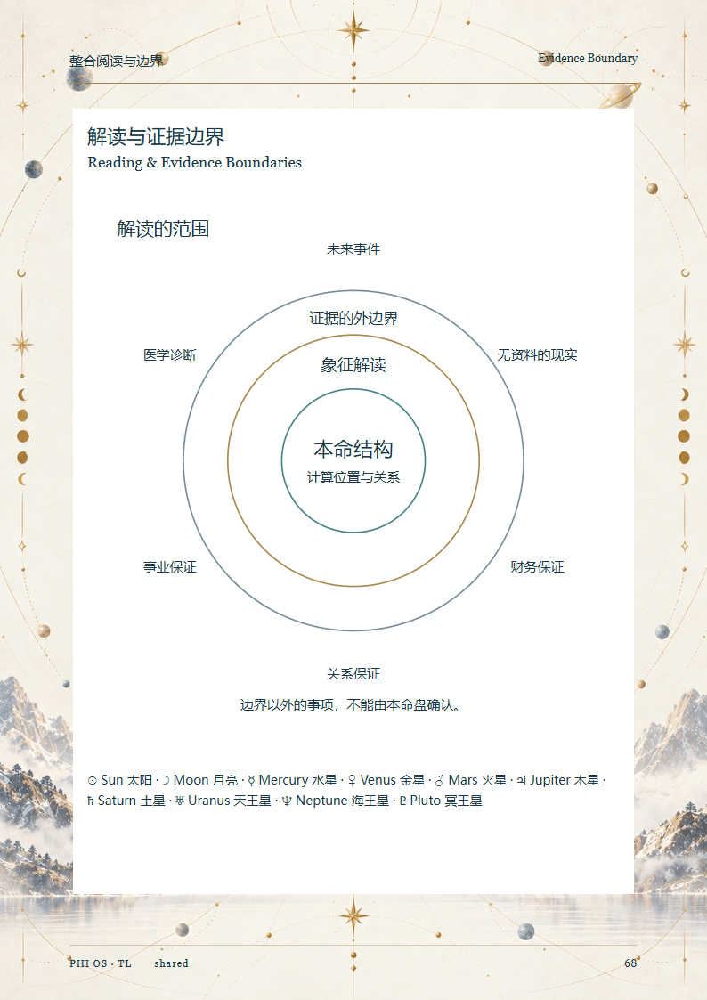
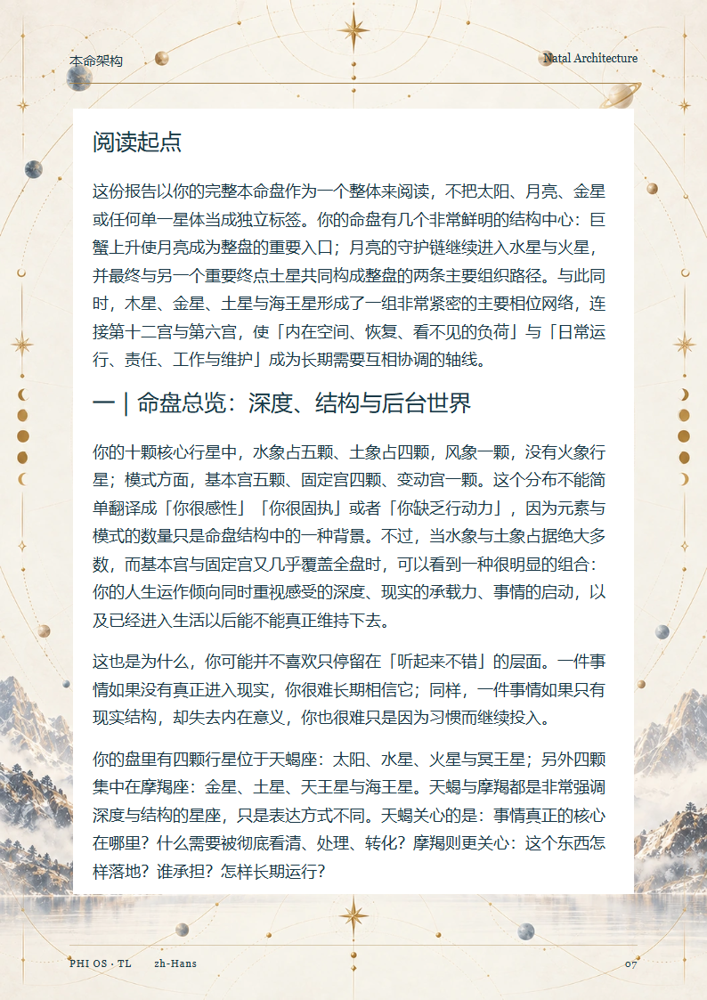
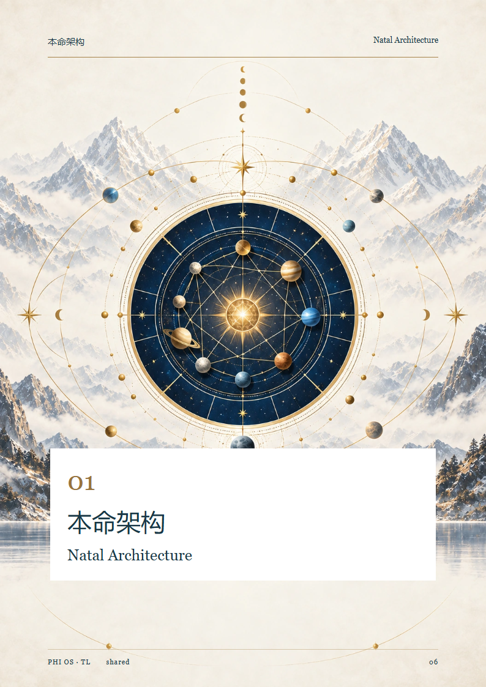

R1 / R1R2 / R1R3 · 实际页面对照
本命盘
R1 · 12 R1R2 · 8
R1R2 · 8 R1R3 · 10
R1R3 · 10
相位网络
R1 · 24 R1R2 · 20
R1R2 · 20 R1R3 · 20
R1R3 · 20
元素与模式
R1 · 23 R1R2 · 18
R1R2 · 18 R1R3 · 22
R1R3 · 22
关系
R1 · 35 R1R2 · 31
R1R2 · 31 R1R3 · 35
R1R3 · 35
事业
R1 · 40 R1R2 · 35
R1R2 · 35 R1R3 · 41
R1R3 · 41
资源
R1 · 44 R1R2 · 39
R1R2 · 39 R1R3 · 46
R1R3 · 46
压力
R1 · 49 R1R2 · 43
R1R2 · 43 R1R3 · 52
R1R3 · 52
证据边界
R1 · 62 R1R2 · 54
R1R2 · 54 R1R3 · 68
R1R3 · 68
阅读页面
R1 · 7 R1R2 · 9
R1R2 · 9 R1R3 · 7
R1R3 · 7
章节开篇
R1 · 6 R1R2 · 6
R1R2 · 6 R1R3 · 6
R1R3 · 6